地政学
アスンシオンはパラグアイ川に面し、ブラジル、アルゼンチン、ボリビアへ開く内陸国の判断を集めます。メルコスール、農牧輸出、水力発電、国境物流が首都の政策に入り、川港の小さな都心が地域政治の窓口になります。
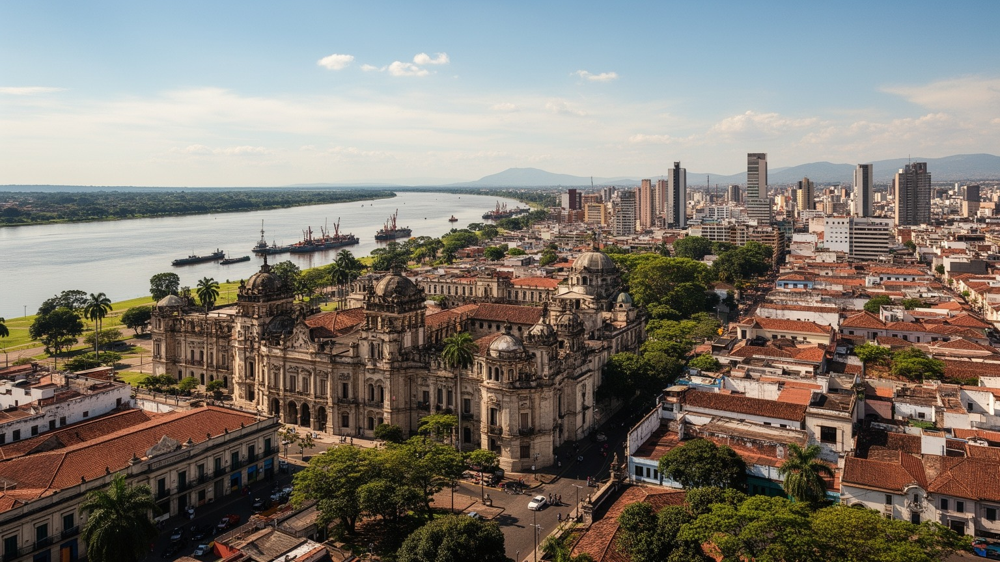
🇵🇾 パラグアイ共和国 / 首都 / World City Atlas
パラグアイ川の湾岸に古い植民都市、国家行政、金融、内陸物流、グアラニー語の暮らし、洪水を抱える低地住宅、郊外化が重なる南米内陸国の首都です。
都市の骨格
アスンシオンは国境河川に面する首都で、行政、銀行、港湾、バス交通、旧市街、低地の居住区が近い距離で重なります。郊外を含む大都市圏は国の人口と経済活動を強く集めています。
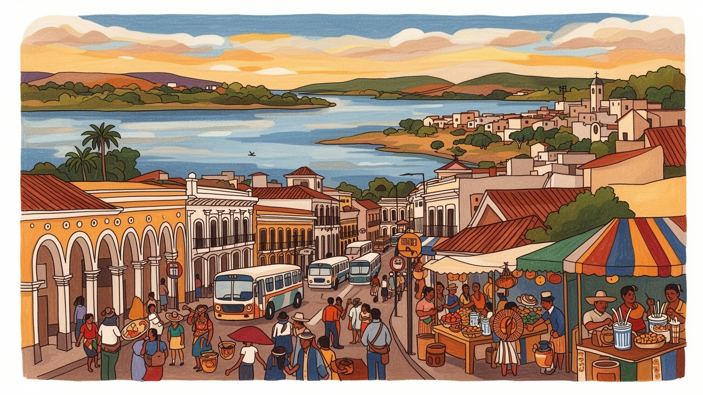
アスンシオンはパラグアイ川に面し、ブラジル、アルゼンチン、ボリビアへ開く内陸国の判断を集めます。メルコスール、農牧輸出、水力発電、国境物流が首都の政策に入り、川港の小さな都心が地域政治の窓口になります。
行政、銀行、商業、建設、通信、教育、港湾物流、バス交通が雇用を作ります。大豆や牛肉の富は地方から来ますが、決済、保険、法務、輸入品の流通は首都に集まり、若者は正規職、配達、露店、小商いを行き来します。
スペイン植民都市の記憶、グアラニー語、カトリック、福音派、民謡、家族の集まりが日常を作ります。市場の会話、ラジオ、SNS、宗教行事、サッカー観戦が、世代を越えた都市の帰属を支えています。深く息づきます。
旅人はロペス宮殿、独立の家、湾岸道路、市場、博物館を歩きます。住民には暑さ、交通、家賃、洪水、低地の移転、郊外通勤が現実で、古い首都の風景と生活の負担が同じ川辺にあります。旅行の印象も変わります。
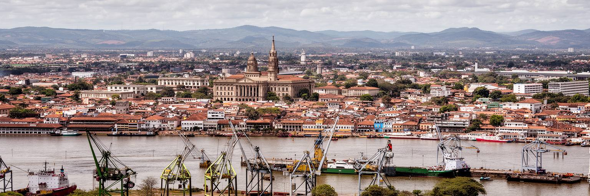
アスンシオンは海に面しない国の首都ですが、閉じた都市ではありません。パラグアイ川に沿う湾岸は、植民地期から人、物資、軍事、行政を動かす水路の結節点でした。現在も燃料、穀物、建材、輸入消費財、工業資材は川と道路を組み合わせて動き、首都の港湾、倉庫、税関、金融、保険、法律実務を通じて国内の市場へ流れます。川は風景であると同時に、内陸国が大西洋へ出るための経済的な線です。水位が下がればバージ輸送は遅れ、雨が続けば低地の住まいが浸水し、物流と生活が同時に揺れます。湾岸道路や再開発は都心を川へ向け直しましたが、川辺には観光の開放感と貧困地区の不安定さが隣り合います。アスンシオンを読むには、港のクレーンだけでなく、川岸に住む家族、通勤バス、輸入品を扱う商人、政策を決める省庁を同じ地図に置く必要があります。朝の湿った川風、バスのブレーキ音、港近くの屋台で売るエンパナーダの匂いも、物流都市の感覚です。川港首都の強さは外へ開く動線にあり、弱さも水位と国境物流への依存に表れます。船員向けの食堂や小さな修理店、携帯で水位情報を追う商人も、川港の日常を支えます。港の背後では古い商店街と新しい湾岸道路がせめぎ合い、観光、通勤、貨物が限られた空間を分け合います。その調整力が都市の評価を左右します。実に大切です。
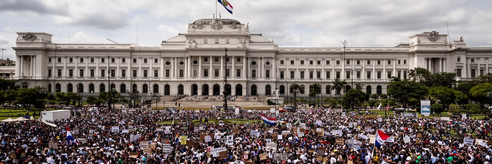
アスンシオンはパラグアイの大統領府、議会、裁判所、省庁、外交団、政党、報道機関が集まる政治の中心です。ロペス宮殿や旧市街の公共建築は、国家の象徴を川辺に見せますが、政治の実体は予算、土地、農牧業、電力、道路、教育、治安、汚職監視をめぐる日々の交渉にあります。パラグアイは長い独裁と軍事的な記憶を持ち、民主化後も政党機械、地方の権力、土地所有、公共事業の配分が政治を形作ってきました。首都ではデモ、記者会見、議会審議、市民団体の要求が可視化され、地方の農民運動や先住民の訴えも官庁街へ届きます。一方で、政治機能が小さな都心に集中するほど、郊外や地方の住民からは距離を感じやすくなります。行政サービスの信頼は大きな演説ではなく、身分証、病院、学校、道路、治安、住宅支援が実際に動くかで測られます。ラジオ討論、テレビの政治番組、SNSの告発、新聞売り場の見出しは、制度への不満や期待を毎朝の街路に流します。昼休みの食堂や市場の列では、家計、学校、警察、公共工事の話が政治へ直結します。議会近くの売店や警備の列、抗議後に残る紙くずも、首都政治の手触りです。川辺の広場で起きる抗議、市場の会話、バス運賃への反応は、国家制度が生活にどう届くかを映しています。制度の近さは監視の厳しさにもなります。その緊張も街を動かします。
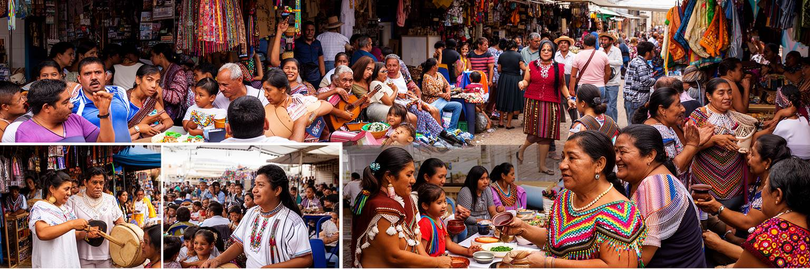
アスンシオンの文化を特徴づけるのは、スペイン語とグアラニー語が同じ生活の中で行き来することです。官庁、学校、銀行、新聞ではスペイン語が強く使われますが、家庭、市場、バス、冗談、感情のこもった会話ではグアラニー語が深く響きます。この二言語性は単なる民俗的な飾りではなく、国家の自己理解の核心です。植民地都市として始まったアスンシオンには、カトリックの儀礼、先住民の言語、メスティーソ社会、独立戦争の記憶、近代化への欲望が重なりました。音楽ではポルカ・パラグアージャやグアラニアが家族の集まりや祝祭に残り、サッカー中継、テレビ、SNSの言葉にも地元の調子が混ざります。市場ではチパ、ソパ・パラグアージャ、テレレの容器が並び、子どもは祖父母の言葉を聞きながら買い物を覚えます。都市の若者は国際的なポップ文化を取り込みながら、家庭の言葉や食卓の作法を使い続けます。夜のライブや教会行事、学校の発表会は、言語と音楽を世代の間で渡す場にもなります。一方で、先住民コミュニティや農村出身者が首都で直面する差別、貧困、教育格差も見過ごせません。文化の豊かさは、学校、医療、司法、行政で言語が実際に尊重されて初めて力になります。市場で聞こえる混ざった言葉は、都市が外来の制度を受け入れながら、土地に根ざした感覚を失わなかった証拠です。
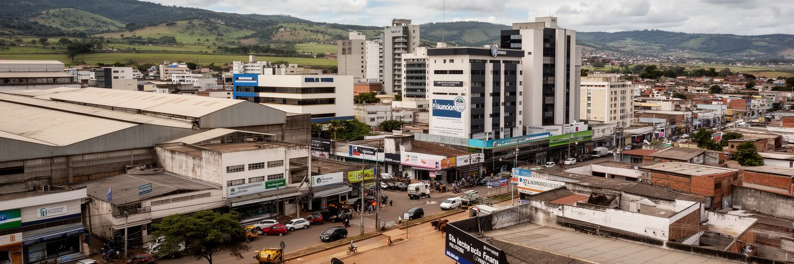
パラグアイ経済の大きな力は、首都の外に広がる大豆、トウモロコシ、牛肉、電力、森林、内陸物流にあります。しかし、その収益を決済し、融資し、保険をかけ、輸出入契約へ変える機能はアスンシオンに強く集まります。銀行、商社、法律事務所、会計事務所、通信会社、建設会社、不動産業、ショッピングモールは、農牧業と内陸交易が生む資金を都市の雇用と消費へ変えています。大豆価格、為替、干ばつ、川の水位、国境通関、ブラジルやアルゼンチンの景気は、都心のオフィスにも市場の物価にも影響します。首都の成長は、地方の土地利用とも切り離せません。農地拡大は輸出収入を支える一方、森林、先住民の権利、小農の生活、農薬、土地集中をめぐる対立を生みます。若者にとっては、公務員、銀行、営業、建設、小売、物流、ITが現実的な進路になりますが、技能と人脈の差は機会を分けます。昼のモールや夜のフードコート、路上の携帯修理、配送アプリの仕事は、金融都市の外側にある労働です。買い物客の動きやカード決済の普及も、都市の消費感覚を変えています。農牧経済の首都を読むとは、畑や牧場から離れたビルの中で、国土の使い方がどのように数字へ変わるかを見ることです。首都の金融機能は、農村の天候や国際商品市況を都市の家賃、雇用、税収へ翻訳します。その結びつきが、街の安定と脆さを同時に作ります。
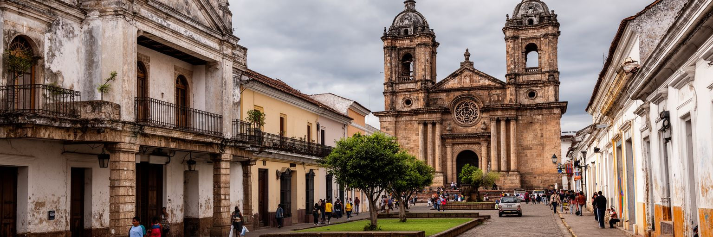
アスンシオン旧市街は、南米でも古い植民都市の一つとして、独立の家、カテドラル、政府宮殿、劇場、広場、商店街を近い距離に抱えています。ここから多くの植民地遠征が出発し、リオ・デ・ラ・プラタ流域の都市形成にも影響を与えたため、「諸都市の母」と呼ばれることがあります。ただし、歴史的な誇りは、現在の空洞化や建物の老朽化を隠すものではありません。商業の中心は郊外のモールや新しい業務地区へ移り、旧市街には行政、低所得の商い、空き建物、夜間の安全不安が残る場所もあります。歴史地区を守るには、外観保存だけでなく、住む人、働く人、歩く人が戻る仕組みが必要です。古い建物を博物館だけにせず、学校、文化施設、小商い、住宅、公共空間として使えるかが都市の記憶を生かします。観光客が独立の家を訪ねる時、その周りの露店、バス停、警備、日陰、歩道の状態も同じ歴史地区の一部です。午後の広場では子どもがアイスを買い、高齢者が日陰で休み、夜には音楽の聞こえる店と早く閉まる商店が混在します。修復された壁と剥がれた舗装の間に、首都が自分の記憶へどれだけ投資するかが表れます。市場の匂い、古い劇場の客、警備員の声も記憶を支えます。夜に人が歩き、古い家に新しい用途が入り、公共交通で訪れやすくなる時、記憶は展示物ではなく都市生活の一部として息を吹き返します。
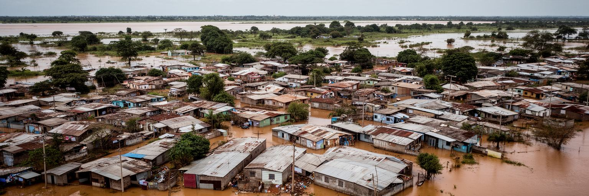
アスンシオンの明るい湾岸景観の足元には、バニャードスと呼ばれる低地の居住区があります。パラグアイ川の氾濫原に多くの低所得世帯が暮らし、増水のたびに家財、学校、仕事、健康が脅かされます。川辺に住む理由は単純ではありません。都心に近く、仕事や市場へ行きやすく、家族や共同体の支えがあり、他に払える住宅が少ないからです。洪水対策として移転住宅や堤防、道路整備が進む一方、住民が遠い場所へ移されると、通勤費や学校、近隣関係が壊れる危険があります。気候変動と河川管理の変化は、増水の予測を難しくし、衛生、排水、ごみ、感染症の問題も重ねます。都市の再開発が川辺を美しくするほど、誰のための水辺なのかが問われます。低地では子どもの通学、高齢者の通院、雨の日の買い物、携帯で届く洪水情報が生活を左右します。雨上がりの泥の匂い、仮設の板道、近所で分け合う食事も日常の一部です。観光客や中所得層に開かれた遊歩道は重要ですが、低地の住民を見えない場所へ押し出すだけなら、都市の不平等は残ります。必要なのは、安全な住宅、移動しやすい立地、住民参加、学校や診療所へのアクセス、洪水時の避難計画を一体に考えることです。川辺で暮らす人々は危険を知らないのではなく、仕事と家族と費用を考えたうえでそこに残っています。その現実を尊重する政策が求められます。
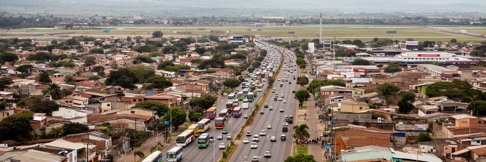
市域としてのアスンシオンは約百十七平方キロメートルの小さな首都ですが、実際の生活圏は周囲の中央県の都市へ大きく広がっています。サンロレンソ、ルケ、フェルナンド・デ・ラ・モラ、ランバレ、マリアーノ・ロケ・アロンソなどを含むグラン・アスンシオンでは、住宅、大学、工場、空港、モール、倉庫、バスターミナルが連続し、多くの人が行政上の境界を越えて通勤します。郊外化は土地と住宅の選択肢を増やしますが、公共交通の信頼性が低いと時間と疲労を増やします。バスは庶民の移動を支える重要な交通ですが、路線、車両、運賃、待ち時間、安全性、渋滞が生活の質を左右します。車を持つ世帯は郊外の住宅やモールを使いやすくなり、車を持たない世帯は歩道、日陰、乗り継ぎ、夜間の安全に強く依存します。郊外のサッカー場、学校、教会、屋台、夜の小さな商店は、通勤だけではない生活圏を作ります。都市圏の拡大は、上下水道、排水、学校、保健、廃棄物処理、土地利用の調整も難しくします。行政区域が分かれているため、交通政策や洪水対策を一つの都市として進める力が必要です。アスンシオンを市域人口だけで見ると小さく見えますが、日々の混雑と移動距離は大都市圏の現実を示しています。徒歩とバスで移動する人の視点を中心に置くことが、広がった都市圏を公平にする出発点です。
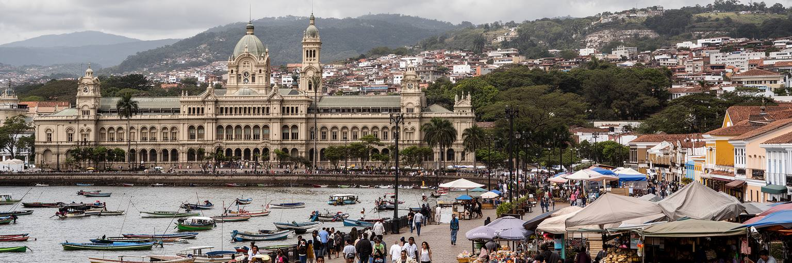
アスンシオン観光は、巨大な記念物を次々に巡る旅というより、川辺の旧市街を歩きながら歴史と日常を近い距離で読む旅です。ロペス宮殿、独立の家、パンテオン、カテドラル、劇場、駅舎、湾岸道路、市場、博物館を組み合わせると、植民地期、独立、戦争、移民、現代政治、都市再開発が短い範囲に見えてきます。夕方の湾岸は市民の散歩、ランニング、サッカー帰りの休憩の場所になり、パラグアイ川の光が首都の印象を柔らかくします。一方で、観光地のすぐ近くに低地の貧困、空き建物、交通の混乱、安全不安が存在するため、都市をきれいな絵だけで見ることはできません。旅行者にとって大切なのは、歴史的建築を眺めるだけでなく、市場でチパやエンパナーダを食べ、地元の案内人から話を聞き、グアラニー語の響きやテレレの習慣を感じることです。週末の家族連れ、屋台の呼び声、川風に混じる焼き物の匂いは、観光の記憶を強くします。観光が地域に利益を残すには、歩きやすい道、案内、公共交通、文化財の修復、小さな店への回遊が欠かせません。首都観光は国のイメージを作る入口であり、同時に住民が自分の街を誇れる公共空間を増やす機会でもあります。アスンシオンの魅力は派手さではなく、川、古い壁、家族の声、政治の舞台が近くに重なる密度にあります。写真を撮る場所と暮らす場所を切り離さない姿勢が必要です。
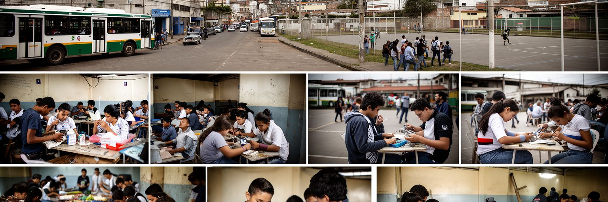
アスンシオンの将来を決めるのは、若い世代がどのように学び、働き、街に居場所を持てるかです。首都には大学、専門学校、民間企業、行政機関、商業施設が集まり、地方から来た学生や労働者に機会を与えます。しかし、教育の質、家賃、交通費、治安、家庭の収入、人脈の差は、進路を大きく分けます。正規雇用に入れる若者もいれば、露店、配達、家族商売、建設、非公式なサービス業で収入をつなぐ若者もいます。デジタル技術や外国語は新しい仕事への入口になりますが、すべての学校が同じ条件を持つわけではありません。女性の安全、若い母親の就学、先住民や農村出身者への差別、薬物や暴力の問題も都市の焦点です。一方で、音楽、サッカー、教会の青年会、大学の議論、起業、小さなカフェや文化イベントは、若者が都市を作り直す力を示します。夜のライブ、SNSで広がる告知、学校帰りの買い食い、祖父母の世話をする若者の時間も都市の現実です。若者の責任にするだけではなく、公共交通、奨学金、職業訓練、保育、図書館、スポーツ施設、安全な公共空間を整えることが必要です。市場で働く十代、大学へ通う郊外の学生、週末に試合を見る家族が、同じ首都の未来を分け合っています。首都の成熟は、才能ある一部だけでなく、普通の若者が安定した暮らしへ進める道の広さで測られます。
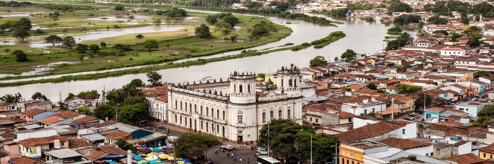
アスンシオンを読む面白さは、都市の規模だけでは分かりません。市域人口は大きくなくても、周辺都市を含む大都市圏はパラグアイの政治、金融、教育、物流、消費、メディアを強く集めています。川港は内陸国の外への入口になり、旧市街は植民地と独立の記憶を残し、銀行街は農牧輸出の収益を処理し、バニャードスは都市の不平等と洪水リスクを見せます。グアラニー語とスペイン語が交差する会話、テレレを囲む家族、カトリックの祭礼、サッカー観戦、郊外のバス通勤は、首都を単なる行政都市ではなく生活の集積として理解させます。旧市街の空洞化、交通の非効率、低地住宅、気候変動、土地をめぐる対立、若者の仕事不足は、都市の将来を制約します。それでも、湾岸の公共空間、文化財の再生、教育、地域交通、住民参加が進めば、古い首都は新しい役割を持てます。アスンシオンは、南米の大都市のような圧倒的な量ではなく、川、政治、農牧経済、二言語文化、社会格差が近い距離で重なる密度によって重要です。市場の匂い、ラジオの声、夜のバス、子どもの遊び場まで見ると、その密度はさらに具体的になります。夕方の川辺から旧市街と郊外へ目を移すと、内陸国がどのように外へ開き、内部の不平等を抱え、次の都市像を探しているかが見えてきます。その近さは時に息苦しさにもなりますが、改善の手応えが早く見える強みでもあります。